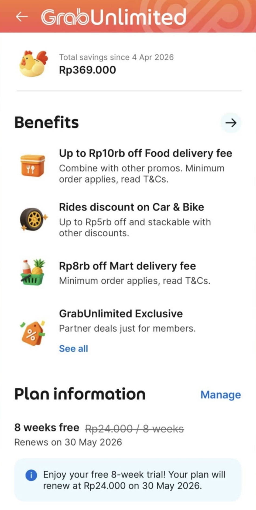

Indonesia · Isla de los Dioses
| Banco | Comisión | Visa | Mastercard |
|---|---|---|---|
| BCA | ✓ Sin comisión | ✓ | ✓ |
| BNI | ✓ Sin comisión | ✓ | ✓ |
| Maybank | ✓ Sin comisión | ✓ | ✓ |
| Mandiri | ⚠ Variable (algunos cobran 50k) | ✓ | ✓ |
| CIMB Niaga | ✗ 2,5% de comisión | ✓ | ✓ |
| BRI | ✗ Hasta 3% en algunos | ✗ No acepta Visa | Solo Mastercard |

| Marca | Tipo | Origen | Dónde comprar |
|---|---|---|---|
| AQUA (Danone) | ✓ Mineral | Manantiales de montaña | Indomaret, Alfamart, Circle K, cualquier warung |
| Le Minerale | ✓ Mineral | Manantiales volcánicos, pH 7.2–7.7 | Indomaret, Alfamart, supermercados |
| Pristine | ✓ Mineral | Manantial de montaña | Supermercados, hoteles |
| Cleo | ⚠ Purificada | Agua filtrada (hiperfiltración, sin minerales) | Indomaret, Alfamart, Circle K |
| Ades | ⚠ Purificada | Agua tratada | Indomaret, Alfamart |
| Equil | ✓ Mineral natural | Manantial de montaña, pH neutro | Pepito, supermercados premium |
| Evian | ✓ Mineral natural (importada) | Francia. La más cara de la nevera. | Pepito, supermercados internacionales |
| VOSS | ✓ Mineral natural (importada) | Noruega. Botella de vidrio característica. | Pepito, hoteles y restaurantes premium |
| Cleo Sparkling | ⚠ Purificada con gas | Agua con gas purificada | Pepito, Indomaret, Alfamart |
| Plato | Descripción |
|---|---|
| 🍳 Nasi Goreng | El plato nacional de Indonesia. Arroz frito con huevo, salsa de soja, ajo y especias. Con pollo, gambas o solo verduras. En Bali casi siempre lleva huevo frito encima y sambal al lado. Económico, abundante y delicioso. |
| 🍜 Mie Goreng | La versión de fideos del Nasi Goreng. Mismos ingredientes, misma salsa, pero con fideos de huevo en lugar de arroz. Igualmente omnipresente en todos los warungs de la isla. |
| 🍢 Sate (Satay) | Brochetas de carne picada o fileteada a la brasa, servidas con salsa de cacahuete. En Bali la versión local (sate lilit) se hace con carne picada de cerdo, pollo o pescado envuelta en una caña y asada lentamente. Diferente y mucho mejor que el satay genérico. |
| 🥗 Nasi Campur | Arroz blanco rodeado de pequeñas porciones de diferentes acompañamientos: carne, tempeh, verdura, huevo, sambal. El equivalente balinés del menú del día. En warung local por 15.000–30.000 IDR es una de las mejores comidas del viaje. |
| 🐷 Babi Guling | Lechón entero asado al espetón durante horas con especias balinesas. El plato más emblemático de la cocina balinesa (que es mayoritariamente hindú, no islámica, por lo que el cerdo es frecuente). Ibu Oka en Ubud es la referencia más conocida. |
| 🦆 Bebek Betutu | Pato cocinado muy lentamente envuelto en hojas de plátano con una pasta de especias balinesas (base genep): cúrcuma, galanga, jengibre, ajo, chile. Requiere horas de preparación. Sabor profundo e intenso. Un plato para celebraciones. |
| 🥥 Lawar | Ensalada de carne picada (cerdo, pollo o ternera) mezclada con coco rallado, judías largas, especias y a veces sangre de cerdo. Plato ceremonial balinés, muy especiado. Varía según el barrio y la familia. |
| 🥜 Gado-Gado | Ensalada de verduras cocidas y crudas (patata, judías, col, brotes, huevo duro) con salsa de cacahuete espesa. Sin picante si no lo pides. Económica y nutritiva — perfecta para vegetarianos. |
| 🧊 Es Campur | Postre de hielo raspado con frutas, jelly de coco, alubias rojas, leche condensada y sirope de azúcar de palma. Refrescante y perfecto para el calor de Bali. |
| 🫘 Tempeh | Bloque de soja fermentada, frito y crujiente. Se sirve como acompañamiento o aperitivo. Alto en proteínas y muy barato. En Bali lo encontrarás en casi todos los platos como guarnición. |
Cuéntanos algo que te hubiera gustado saber antes de ir. Cada experiencia ayuda a otro viajero.
BCA y BNI son los más fiables. Saca siempre en rupias cuando el cajero te pregunte — nunca aceptes la conversión a euros del propio cajero, el tipo de cambio es pésimo.
Nos estafaron 400.000 rupias en un exchange de Ubud con el truco de la mano rápida. Fuimos 4 personas mirando y ninguno vio cómo lo hicieron. Nunca dejes el dinero sobre el mostrador una vez contado.
Renovamos el visado en la oficina de inmigración de Denpasar. Fuimos a las 8h de la mañana y esperamos 4 horas para una foto y unas preguntas. Sin cita previa, todo el mundo llega a la vez. Ve lo antes posible y lleva paciencia.